CH29 — ep
episode一覧（サムネ付き / 綺麗なURL）
ep
Script Viewer
snapshot
guide
シニアの人生が軽くなる話 (CH29)
script 0/30
updated_at: 2026-01-12T23:40:25.903078Z
URL例:
/ep/CH29/001/thumb/
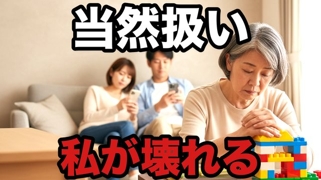
CH29-001
孫の世話が“当然”になった日…私は限界を知った
script —
画像 —
CH29-002
「お母さんだから」…その言葉が一番苦しかった
script —
画像 —
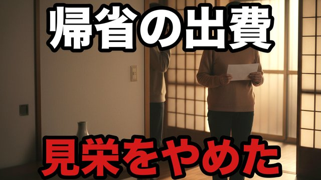
CH29-003
帰省のたびに消える貯金…“いい顔”をやめた
script —
画像 —
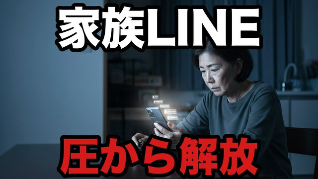
CH29-004
家族LINEが地獄…既読の圧から抜けた
script —
画像 —
CH29-005
義実家の手伝いで倒れた…“ありがとう”が無かった
script —
画像 —
CH29-006
「孫がかわいそう」…脅しの言葉を受け流した日
script —
画像 —
CH29-007
子どもの“正論”が刺さる…私は弱音を言えなかった
script —
画像 —
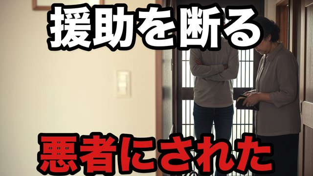
CH29-008
援助のお願い…“断った私”が悪者になった
script —
画像 —
CH29-009
孫の習い事…見栄の競争に巻き込まれた
script —
画像 —
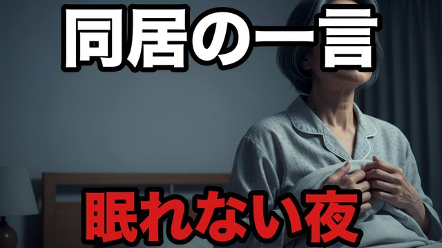
CH29-010
「同居して」…一言で眠れなくなった夜
script —
画像 —
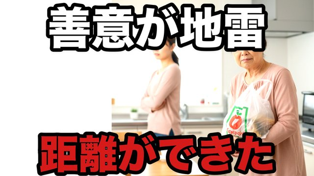
CH29-011
お嫁さんに嫌われた…“原因”は私の善意だった
script —
画像 —
CH29-012
「手伝って」じゃなく「やって」…命令に変わった瞬間
script —
画像 —
CH29-013
介護の話…兄弟の一言で“押し付け”が始まった
script —
画像 —
CH29-014
孫の写真が送られてこない…寂しさの扱い方
script —
画像 —
CH29-015
「お母さんのため」…実は子どもの都合だった
script —
画像 —
CH29-016
家族旅行で気づいた…私は“便利な人”だった
script —
画像 —
CH29-017
お盆の台所…私だけ働く空気が限界
script —
画像 —
CH29-018
孫が言った「おばあちゃん怖い」…胸が痛かった
script —
画像 —
CH29-019
子どもの家庭に口出し…“正しさ”で壊した関係
script —
画像 —
CH29-020
“会いに行く”のをやめたら、関係が戻った
script —
画像 —
CH29-021
家族の愚痴を聞きすぎた…私の心が先に壊れる
script —
画像 —
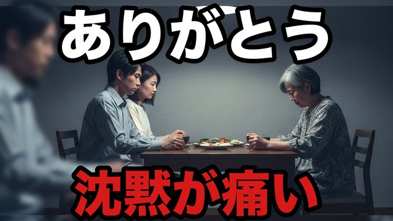
CH29-022
「ありがとう」を要求してしまった…その後の沈黙
script —
画像 —
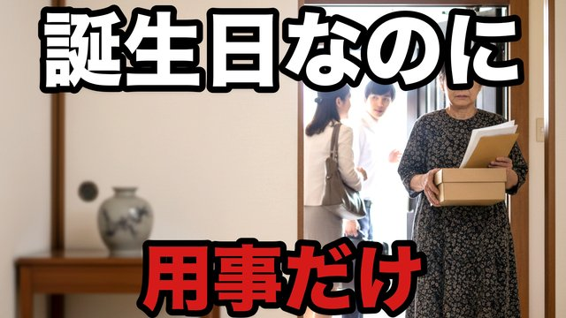
CH29-023
誕生日に来たのは“用事”だけ…私は泣かなかった
script —
画像 —
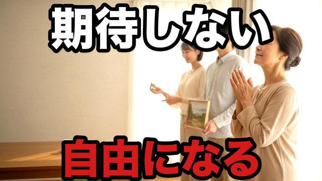
CH29-024
子どもに期待しない…冷たい言葉じゃなく“自由”だった
script —
画像 —
CH29-025
孫のために貯めたお金…使われ方が違った
script —
画像 —
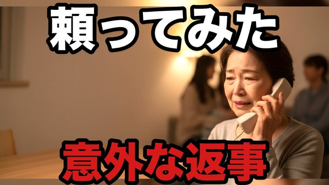
CH29-026
「迷惑かけたくない」…でも一度だけ頼ってみた
script —
画像 —
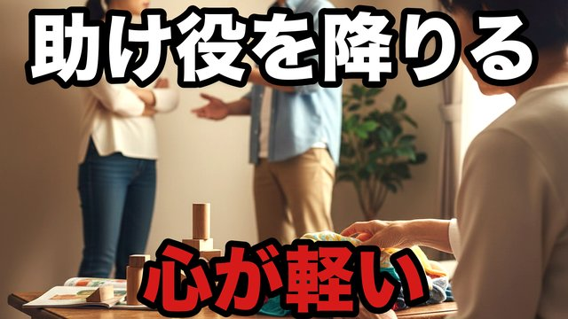
CH29-027
子どもの夫婦喧嘩…私は“助け役”を降りた
script —
画像 —
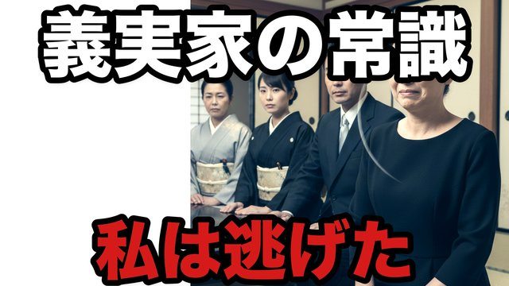
CH29-028
義実家の“常識”が苦しい…私は逃げた
script —
画像 —
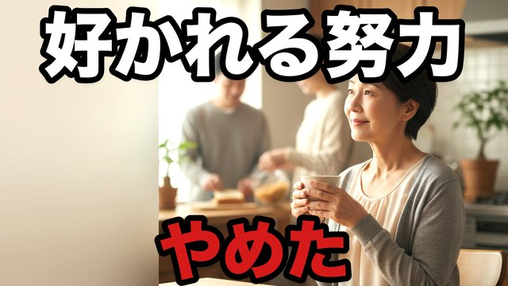
CH29-029
家族に好かれる努力をやめた…それでも私は私
script —
画像 —
CH29-030
最後に残ったのは“距離”だった…家族を守る距離
script —
画像 —